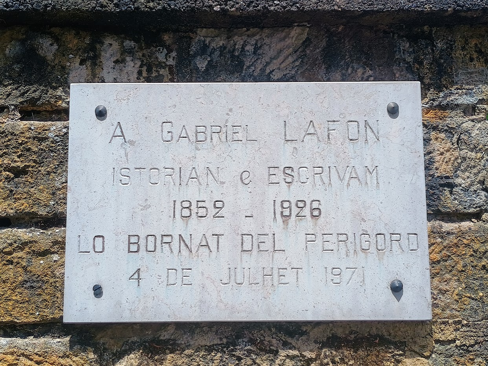

A rare example of Occitan.
A couple of weeks ago I visited the Vézère valley; I was at the FRCCS conference in Bordeaux and I wanted to see Lascaux. The cave, or at lest the cave facsimile was wonderful, but not the subject here; I had known that story of the teenagers and their dog finding the caves in 1940, I hadn't known that one, Simon Emmanuel Coencas, was Jewish and got caught up in, but thanksfully survived, the horror that entailed. I also hadn't realised the boys spoke Occitan, not French.
It is a shock to be reminded how recently Occitan was spoken and how suddenly it seemed to vanish. Before the first world war it was widely spoken in the Dordogne, it is the inheritor of a rich medieval troubadour tradition and a nineteenth century literary revival but after the second world war it was becoming rare and now it has all but vanished. Vanished and vanished without a trace, it does not appear as a second language on street signs, or a ritualized if rarely read extra passage on official notices.
I did find one remenant, the plaque above by a school in Les Eyzies; I can't find anything more about Gabrial Lafon but by 1971 when the plaque was put up the language it was written in had all but disappeared. I wonder if languages have always disappeared as often as have over the last two centuries; perhaps what has changed is not that languages are more likely to disappear but that they are less likely to be created. However, whether this is a consequence of modernity, or part of a timeless rule that dooms most languages, it is sad to imagine all the languages we have losts, each its own little world, each a delicate fusing of culture and the broken-logic of grammar.